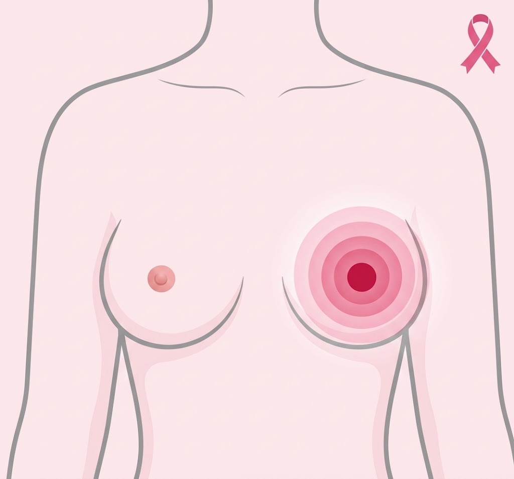

Fique Atenta aos Sinais

Sinais principais:
-
Nódulo ou caroço na mama ou axila
É o sinal de alerta mais frequente. Preste atenção ao aparecimento de qualquer caroço que seja endurecido, fixo e que geralmente não causa dor ao ser tocado.
-
Pele avermelhada ou retraída
Mudanças na textura da pele da mama são sinais importantes. Fique atenta caso a pele apresente inchaço, vermelhidão ou fique cheia de pequenos furinhos e áspera.
-
Alterações no mamilo
Fique atenta a modificações diretas no mamilo, como a inversão recente (quando ele vira para dentro), coceira constante, feridas, crostas ou descamações que demoram a cicatrizar.
-
Saída de líquido
A liberação de secreção pelo mamilo sem que haja qualquer aperto ou estímulo é um sinal de alerta crítico, principalmente se o líquido for totalmente transparente (como água) ou contiver sangue.
-
Retração ou afundamento
Observe se há alguma área da mama que parece estar sendo "puxada" para dentro, gerando sulcos, covinhas ou deformações no formato natural do seio que não existiam antes.
Importante!
Ao identificar qualquer alteração, procure um profissional de saúde.